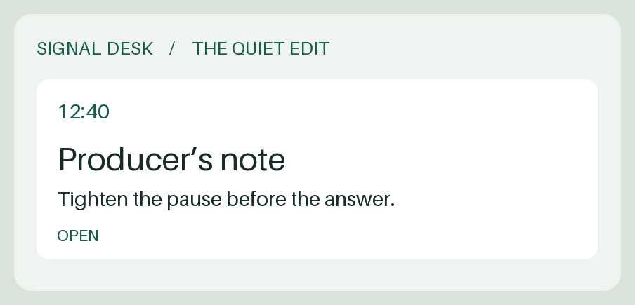
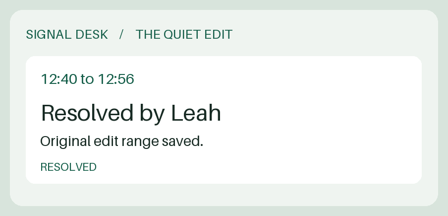

SIGNAL DESK / DEMO
Give every edit note a home

SIGNAL DESK / DEMO
Assign the exact cut
SIGNAL DESK / DEMO
Close the loop

Give every edit note a home.
Open the episode and find the note at 12:40.
Select the exact range and assign the edit to Leah.
Mark it resolved when the edit is done.
The timestamp stays with the note.